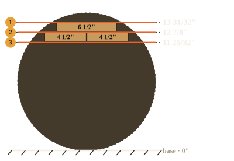
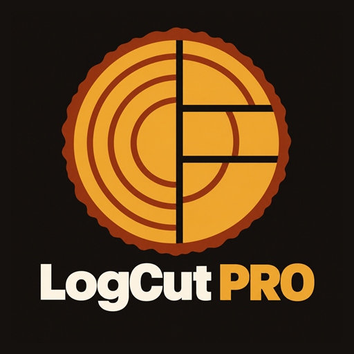

GUÍA DE CORTE
LC / Primera orientación
DIÁMETRO15″
ANCHO DE TABLA8 ½″
in
Posiciones de sierra desde la base

LogCut PROPARA EL TRABAJO EN EL ASERRADERO
Convierte las medidas de tu troza en una guía de corte. Compara anchos de tabla y consulta las posiciones de la sierra desde tu celular.
Conoce cómo funcionaEn pruebas · Próximamente en Google Play

Ejemplo generado por la app · Vista adaptada para esta web
UN FLUJO SENCILLO
Organizada alrededor de las decisiones que tomas en el aserradero, desde los ajustes hasta el plan de corte que elijas.
Define el diámetro de la troza, los grosores de tabla y el ancho de corte de tu sierra. Trabaja en pulgadas o milímetros.
Revisa los anchos disponibles y elige la opción que corresponda al material que necesitas producir.
Consulta el diagrama, los giros y las posiciones de la sierra para el plan que seleccionaste.
A TU MANERA DE TRABAJAR
La app calcula en tu dispositivo y conserva los ajustes de tu máquina. Empieza una nueva troza sin volver a capturar todo.
ANTES DE EMPEZAR
LogCut PRO está en pruebas. Aquí aparecerá el enlace oficial de Google Play cuando esté disponible. Todavía no hay una descarga pública en la tienda.
Sí. Puedes ingresar pulgadas y fracciones. Los milímetros también están disponibles si te resultan más cómodos.
Los cálculos y las guías funcionan sin conexión. Descargar la app, actualizarla y dejar comentarios en Google Play requiere internet.
Cuando esté disponible la prueba cerrada en Google Play, los participantes podrán dejar comentarios privados allí. Después del lanzamiento público, los usuarios podrán escribir reseñas en la ficha de la tienda.
LOGCUT PRO PARA ANDROID